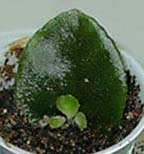
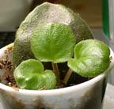
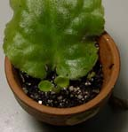

I am just learning how to propigate
violets from leaf cuttings. So far I have several babies grown
from a single leaf and a couple of "suckers" that I
have rooted successfully!
Babies of Satin Bow
6/3/01
6/27/01

Babies
of Gonzo
6/27/01
If you look closely, you can see 2 plants starting - one at
the bottom with 2 "large" leaves and a couple of tiny
leaves at "3 o'clock" in the pot.